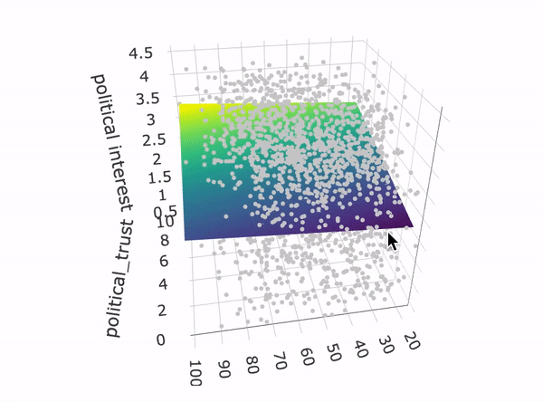
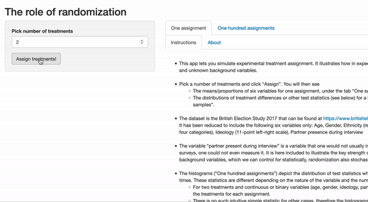

Code and packages
Analyis of Web Browsing Data: Practical Code Guide: This accompanies the paper published in the Social Science Computer Review and guides researchers through four steps of using browsing data (pre-processing, filtering observations, classifying, modelling). It will be continuously updated. Code
WebtrackR package: As a collaborator on this package, I am working on functions for preprocessing and analysing web browsing data, such as extracting components of URLs, estimating the duration of page visits and classifying visits. Code
Parsing Factiva output: Factiva is a great resource for working with past news articles. Which does not mean it's practical to use. Exporting search results to some processable format like csv is tedious: Your options are a PDF (not structured well enough for online converters), an RTF (again no luck with online converters) or HTML. This R function does the job of parsing Factiva results into a data frame. Code
Python function for approximating following dates of Twitter followers: The Twitter API (now defunct!) does not provide information about when a Twitter user started following another. This Python script allows you to infer the earliest possible date a user can have started following another user, exploiting the fact that Twitter orders the list of followers according to date of following.
Code
Interactive apps and visualizations
"Visualizing regression" (Shiny App): One-predictor regression may be intuitive enough, but what about a model with several predictors and interactions? This app offers an intuitive understanding of what "ordinary least squares" does, by showing how it fits a line or plane to the data points. App | Code
"The role of randomization" (Shiny App): Experiments are considered the "gold standard" of causal inference: Through randomization, treatment groups are in expectation equal on known as well unknown variables. The app illustrates this by allowing users to re-assign treatment groups and observe group differences on a number of variables such as age and gender. App | Code
Data sets
"A list of over 5000 US news domains and their social media accounts": A list of US news domains with their associated social media accounts and ideology scores from Robertson et al. (2018). Data set | Release
"A list of Polish news domains with ideology scores and social media accounts": A list of Polish news domains with their associated social media accounts and ideology scores, estimated with a variant of the mediascores model. Data set | Release

Bernhard Clemm von Hohenberg
Quantitative Political Scientist